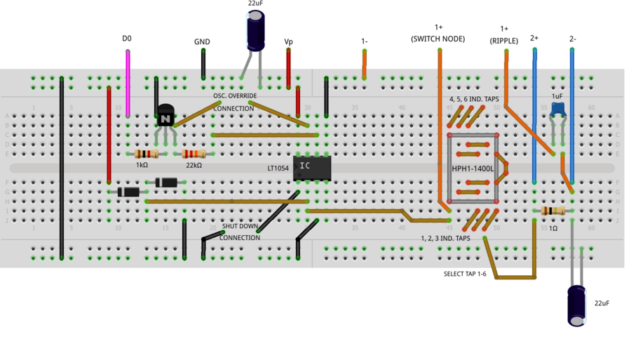

Activity: Buck Converter Basics
Objective:
The objective of this activity is to explore some basic principles of a buck converter, a power conversion circuit that efficiently produces an output voltage that is lower than the supplied voltage:
Inductor characteristics (current / voltage / time relationships)
Volt-second balance
Pulse-Width Modulation
Inductor current ripple
Output voltage ripple
Open-loop vs. closed loop operation
Voltage-mode control
Workshop Slide Deck
A slide deck is provided as a companion to this exercise, and can be used to help in presenting this material in classroom, lab setting, or in hands-on workshops.
Download
Background:
Most electrical engineers and students are familiar with linear voltage regulators, such as the LM7805 positive 5V regulator or the LM317 adjustable positive regulator. Linear regulators are suitable for applications in which one of the following is true:
Small load current drawn from the regulated output (where the input voltage might be much higher than the output voltage)
{kind=link}
Figure 1. LDO with high voltage drop, low output current
Large load current drawn from the regulated output (where there is a small difference between the unregulated input voltage and the regulated output voltage)
Figure 2. LDO with low voltage drop, high output current
{kind=link}
The reason for the conditions on current and input-output voltage difference is that the linear regulator will always dissipate the product of the output current and this voltage difference as heat. The following figure shows a situation in which 3.5 watts of power will need to be dealt with, using a large heat sink, fan, or both. Figure 3. LDO with high voltage drop, high output current
{kind=link}
Heat sinks are large, expensive, and lose effectiveness if they accumulate dust. Fans are loud and have limited lifetimes. And of course, electrical power lost as heat costs just as much as power that does something useful in your circuit. This is where buck converters are useful.
Note that all schematics are included as LTspice files, with simulation parameters set up and ready to run. Run these simulations, and experiment with different component values, voltages, etc.
Materials
Activity 1: An Open-Loop 2:1 Buck Converter
Theory and Simulation
Simulation using ideal components
Open the Buck_Concept.asc LTspice file. The figure below shows one of the two states of the circuit’s operation, where S1 is closed and S2 is open.
Figure 4. Buck converter top switch closed
{kind=link}
Assume Vout is some voltage between zero (ground) and Vin (5V). When S1 closes, the lefthand side of inductor L1 is connected to the 5V supply, and the current through L1 ramps up with a slope of:
The next figure shows the other state, with S1 open and S2 closed.
Figure 5. Buck converter bottom switch closed
{kind=link}
When S2 closes, the lefthand side of inductor L1 is connected to ground, and the current through L1 decreases with a slope of:
The “freq” and “duty” parameters set the frequency of the switching to 25kHz and the duty cycle of the voltages imposed on this switch node (sw_node) to 50%. That is, the lefthand side of the inductor spends half of the time connected to the input supply, and half of the time connected to ground. Run the simulation, and probe sw_node, Vout, and the current through inductor L1. Zoom in toward the end of the run after the startup transient damps out. (You can right-click, Autorange y-axis to line up the two waveforms.)
Figure 6. Inductor current, switch node, output
{kind=link}
Hover the cursor over the peak and valley of the I(L1) waveform, noting the current values. (We already know the high time and low time of the waveform - the period is 1/25kHz, or 40us, and the duty cycle is 50%, so the high time and low time are both 20 microseconds.)
The output voltage looks like it is approximately 2.5V, with some “ripple” superimposed. If this is the case, verify that these equations hold true:
The output voltage looks close to 2.5V, but is it exactly 2.5V? One of the basic assumptions of an inductor’s operation in a circuit is that the DC (steady-state) voltage across an ideal inductor is zero. To see why, let’s try to go against this rule. Open the “runaway_inductor.asc” LTspice simulation:
Figure 7. Runaway Inductor Schematic
{kind=link}
and run it, probing the inductor current:
Figure 8. Runaway Inductor Current
{kind=link}
The simulation applies the same 5V across the same 100uH inductor, but instead of switching at 25kHz, the voltage source is left connected continuously. The simulation steps through four values of inductor DC resistance (all inductors have some resistance, usually specified in the inductor’s datasheet.) The first resistance is very small, a close-to-ideal 1 micro-ohm (LTspice does not allow a value of true zero). The current climbs almost linearly to 500 amps in 10 milliseconds! Even with higher resistances of one milliohm, ten milliohms, and 0.1 ohms, currents are still unrealistically high for the experiments we will be doing shortly. (A simulation is very useful for exploring “what if?” situations in a circuit that would not be possible in a real experiment.)
So how can we apply this rule of zero DC across an inductor to find the output voltage of a buck converter, knowing the duty cycle? “Zero DC across an inductor” means that if a voltage is applied in one polarity for a given time, imposing a certain volt-second product, an equal but opposite volt-second product must also be applied, such that over a long period of time, the average volt-second product is zero. Thus:
where tS1 is the time that S1 is closed, tS2 is the time that S2 is closed.
Solving for Vout:
Noting that
is the duty cycle of the sw_node waveform:
So for a 50% duty cycle, the output voltage is half of the input voltage.
Simulation using “simulated real” components
While normally intended as a switched-capacitor converter, the LT1054 can be configured to illustrate the basic operation of a buck converter. The CAP+ pin is a convenient “push-pull driver” that is alternately connected to the input supply (VIN pin) and ground (GND pin). The LT1054 has a built-in 25kHz, 50% duty cycle oscillator, so a fixed 2:1 ratio buck converter can be easily implemented.
Open LT1054_2to1_buck.asc in LTspice, and run the simulation.
Figure 9. Open-loop 2:1 Buck Converter
{kind=link}
A few things to note about the LTspice schematic: The Coilcraft HPH1-1400L 6-winding transformer allows the circuit to be simulated / tested with several different values of inductance. The “K1 L1 L2 L3 L4 L5 L6 0.95” statement tells LTspice that the windings are on the same core (coupled), rather than discrete inductors. This means that the inductance will increase by the square of the number of inductors connected in series: 202uH for a single inductor, and 202uH * 36 = 7.2mH when all six inductors are connected in series.
Note that the circuit elements in dashed boxes apply stimulus for the simulation, with opening and closing of switches representing the connection or disconnection of a jumper wire on your breadboard.
The figure below shows the turn-on transient of the circuit, with ringing due to resonance between the inductor and output capacitance, which is damped out by the load resistance. At 4 milliseconds, a 50-ohm load is connected to the output, causing a drop in the output voltage. This drop is due to finite impedances in the LT1054’s switches, as well as the inductor’s DC resistance.
{kind=link}
Ripple Current and Ripple Voltage
Now we’ve got a circuit that efficiently converts one voltage to another, without burning lots of power. In fact if you had an application where there was a well-regulated 12V power supply available, and a downstream circuit needed a “not-too-well-regulated” 6V supply, this buck converter might be perfectly appropriate. Let’s start examining some of the imperfections and decisions involved in designing a buck converter. One of the most important is the selection of the inductor value. Even when the output is unloaded, there will be a “ripple current” always flowing in the inductor as the input side of the inductor is alternately connected to the high-voltage input supply and ground. The peak-to-peak ripple current can be calculated as:
So a higher inductance would seem to be better, as the ripple current is proportionally lower. However, it takes more wire to make a higher-value inductor, and the resistance will be higher. There are often limitations on how physically large an inductor can be as well; portable electronics often require circuits to be as small as practical, and sometimes as small as physically possible. In general, a peak-to-peak ripple current is chosen to be between 10% and 60% of the DC output current.
Why does ripple current matter? Ideally, any DC-DC converter (LDO, Buck, Boost, etc.) produces a stable, low-noise output voltage from an imperfect (noisy, variable) input voltage. Ripple current induces a corresponding ripple in the regulated output voltage, as the ripple current charges and discharges the output capacitance by a small amount. Ripple voltage can be calculated as:
So a higher output capacitance will result in a lower ripple voltage. But as with the inductor, there are often limitations on how physically large a capacitor can be. Also note the “ESR” term, which is the equivalent series resistance of the capacitor. This resistance will be listed in a capacitor’s datasheet.
The LT1054_2to1_buck.asc simulation allows you to easily experiment with different inductances and capacitances. Try connecting the input side of R1 (the current-sense reistor) to the various “taps” in the series-connected inductors. For each run, probe the current in R1 and the voltage at Vout. The figure below shows a stepped simulation, for between 1 and 6 of the HPH1-1400L’s inductors connected in series:
Figure 11. Inductor Ripple Current and Output Ripple Voltage
{kind=link}
With the green trace showing a decreasing ripple current with increasing inductance, and the red trace showing a corresponding decrease in ripple voltage… accompanied by poorer load regulation due to the increased resistance of the windings. (Try increasing the .param dcr to 0.5 ohms to make this effect more apparent.)
Circuit Construction and Testing
Build the following breadboard circuit for the buck converter, following the schematic in Figure 16. (Q1, R2, R3 can be added later.) Note that the HPH1-1400L has six inductors that can be connected in any way (series, parallel, or a combination of the two). Be sure to observe proper polarity, connecting all inductors in series as shown. <WRAP info> The circuits in this lab are compatible with solderless breadboard construction. However they are relatively complicated and take time to construct and debug. The ADALM-BUCK-ARDZ Module is available as an alternative.
 Figure 12. Breadboard Circuit
{kind=link}
The circuit can also be soldered on a “Perma Proto” solderable breadboard from Adafruit or DigiKey SolderFul breadboard, which match the layout of typical solderless breadboards.
Figure 13. Alternate Construction Method
{kind=link}
Measure the ripple current for different numbers of series-connected inductors. The animated figure below shows the ripple current for 2, 3, 4, 5, and 6 inductors. How well does this match the LTspice simulation?
 Figure 14. Ripple Current for 2 to 6 Windings in
Series
Figure 14. Ripple Current for 2 to 6 Windings in
Series
Note
Notice the “steps” in the switch node voltage as the inductor current passes through zero. After switching, current initially flows through diodes D1 or D2. As the current passes through zero and switches direction, the LT1054 output driver “takes over” and drives the switch node. In the LTspice simulation, try probing the LT1054 CAP+ current, D1 current, and D2 current separately, noting that the inductor current is the sum of the three.
Measure the ripple voltage at the output of the converter, with a 22uF output capacitor. Then place an additional 47uF capacitor in parallel, for a total of 69uF. Does the measured ripple match the simulated ripple reasonably well? Note that both the inductor and electrolytic capacitors can have a very wide tolerance - tolerances of +/-20% are common for inductors, and -20%/+80% is a common tolerance for electrolytic capacitors.
The animated figure below shows the ripple voltage for output capacitances of
22uF and 22uF+47uF.  Figure 15. Output Ripple for
22uF, 22+47uF output capacitance
Figure 15. Output Ripple for
22uF, 22+47uF output capacitance
Activity 2: An Open-Loop Variable Buck Converter
Theory and Simulation
The LT1054’s internal oscillator can be overridden with a simple external circuit shown in the datasheet, allowing the frequency and duty cycle to be changed. Add this circuit to your breadboard, and connect to digital I/O DIO 0 on the M2K, or to a benchtop pulse generator.
This circuit is also included in the LT1054_buck_complete.asc LTspice simulation. (Ignore the text in the dashed box, we’ll get to that in the next experiment!)
Figure 16. Buck Converter with Internal Oscillator Override
{kind=link}
Open the circuit and run the simulation; the duty cycle and frequency are parameterized so that they can be easily changed. Test several values of the duty cycle (20%, 40%, 60%, 80%), show that VOUT = VIN * Duty Cycle
Circuit Construction and Testing
Use M2K to override the LT1054’s internal oscillator. Open Scopy’s pattern generator, and take measurements at 20%, 40%, 60%, 80% duty cycle. <<add setup details, make a Scopy ini file.>> Set back to 50%, then connect a 50-ohm load. Calculate the approximate output impedance.
Activity 3: A closed-Loop, Voltage Mode Buck Converter
Theory and Simulation
Obviously, sensitivity to input voltage changes and output loading is undesirable. The figure below shows a feedback path that observes the output voltage, and adjusts the duty cycle accordingly. That is, if the load increases, causing a drop in output voltage, this will be sensed by “something” that will increase the duty cycle to compensate and bring the output voltage back to it’s desired value. There are various ways to accomplish this: we’ll leave it as an extra activity to close loop in (either in LTspice or on the breadboard) using a voltage reference, op-amp, and an LTC6992 PWM generator. The result will be a true voltage-mode buck converter.
This feedback path can be implemented in another way - using a software-programmable feedback loop. The M2K already has the required elements - it can measure the output voltage, and control the duty cycle of a digital output. Scopy includes a “debug mode” that allows interaction with JavaScript programs, and a script is included in the resources section that does this.
Yet another way is to use an Arduino Uno microcontroller to close the loop. The Uno has 6 analog inputs, one of which can be used to measure the output voltage. It also includes several PWM outputs, that can be used to control the duty cycle of the LT1054.
Circuit Construction and Testing
Connect the buck output to the A0 analog pin on the Arduino and the Arduino’s D3 digital signal to the buck converter’s control input. Figure 17 shows connections to an Arduino Uno clone. The yellow wire connects the buck output to the Arduino’s A0 input, and the blue wire connects the Arduino’s PWM output on Digital Pin 3 to the oscillator override input. (Using two ground wires ensures a lower inductance connection between circuit grounds.)
Figure 17. Buck Converter with Arduino Control
{kind=link}
Copy this Arduino sketch into your Arduino sketchbook (and restart the Arduino IDE if it’s open.) <WRAP round download>
The following figure shows the operation of the closed-loop circuit. The setpoint voltage is 3.141V, and the purple trace starts out close to this value at the lefthand side of the Scopyshot. A 50 ohm load is then connected to the output, drawing approximately 120mA, and producing a dip in the output voltage. The Arduino loop detects this and increases the PWM frequency accordingly, restoring the voltage to its correct value. Then the resistor is removed, producing an increase in the output voltage. Once again, the Arduino loop detects this disturbance and compensates.
Figure 18. Arduino Controlled Buck Transient Response
{kind=link}
<WRAP round download> Resources:
LTSpice files: buck_ltspice
Fritzing files: buck_bb
JavaScript files: buck_script